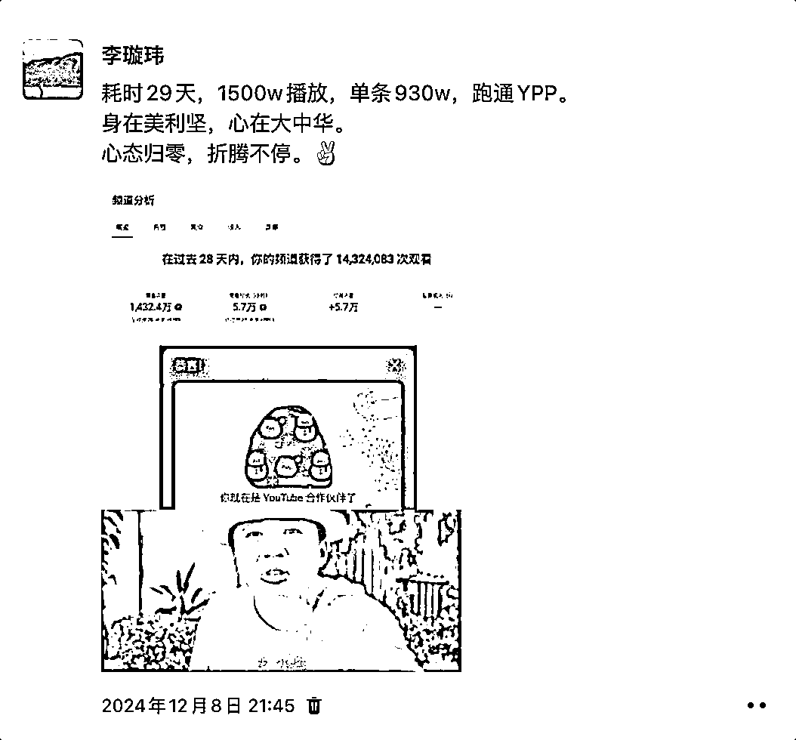
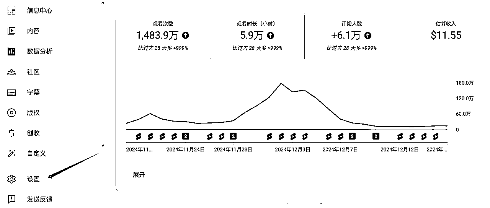
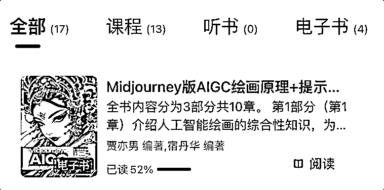
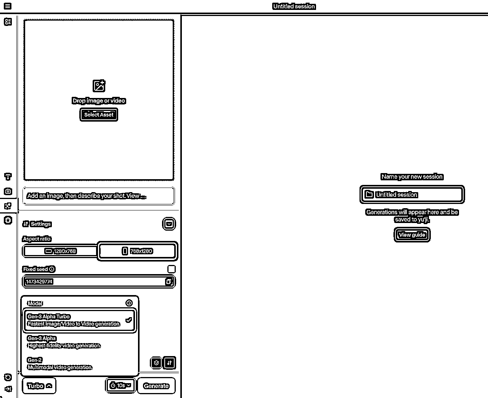
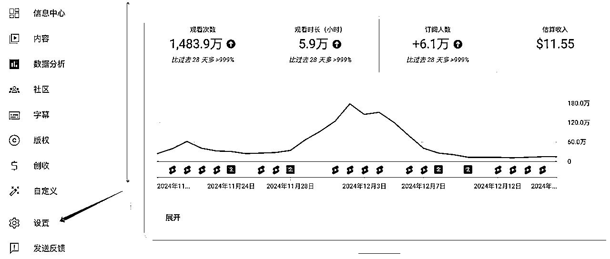
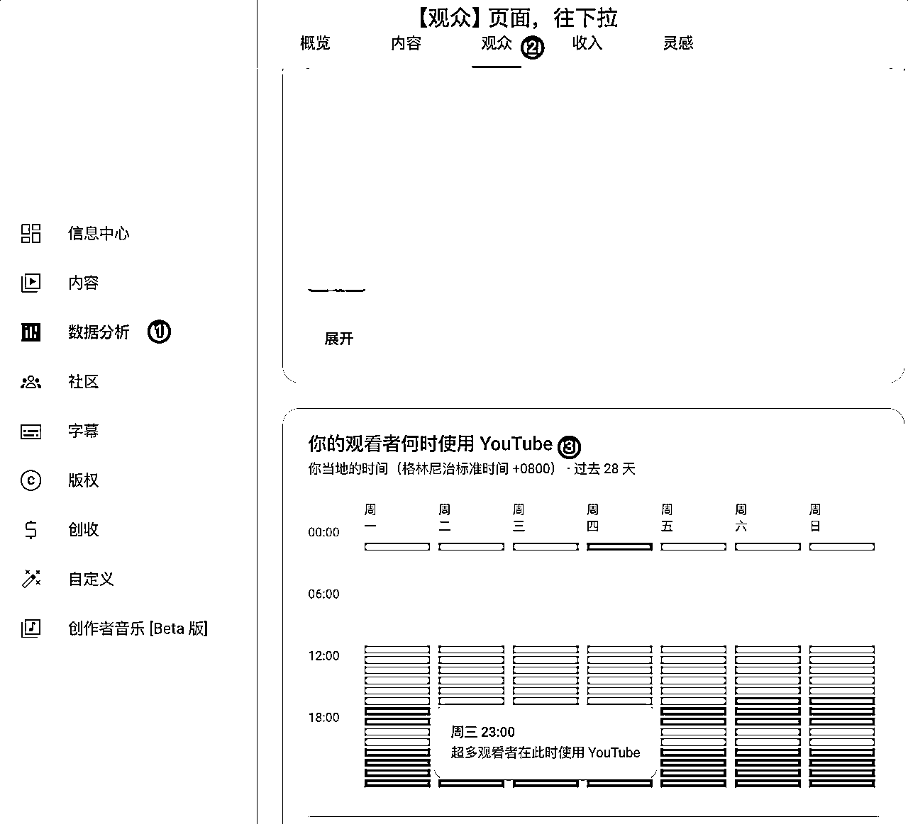
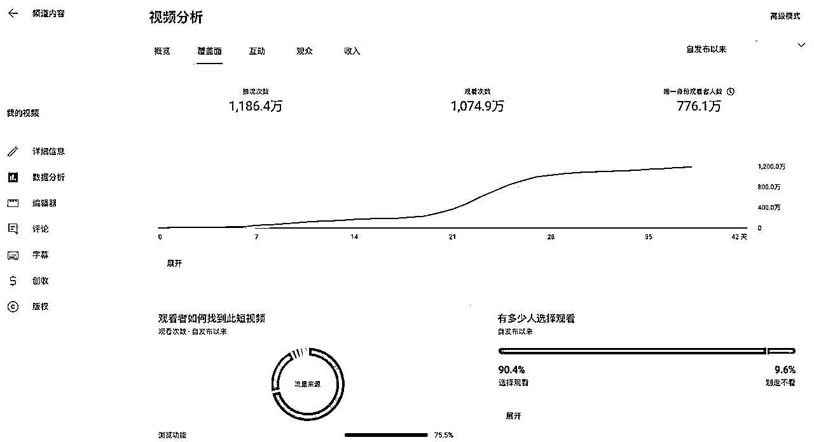

来源：https://ntb7l7i3sy.feishu.cn/docx/CNnYd18U6oTmyexRLYPcznYJnjb
圈友们好，我是李璇玮。
来生财快两年了，一直是潜水学习各位优秀的圈友大佬。
首次发帖，措辞如有不当之处，多包涵。
做个简单介绍，主动让大家认识下。
95 后，美团和旺旺搬过两年砖，体验过一年多的编制，口罩后接触知乎好物，单月最高 3w（传送门）。之后也跑通过一些项目，暂且就先不提了。
这次分享，主要出于两点：
一是给自己做个深度复盘，顺带给大家提供一些避坑细节；
二是想给大家打打气，或是泼泼水，让大家更明白自身状态。
10 月底看到 @亦仁 发的超级标后，星球的相关帖也不多。特别感谢几位圈友的帖子，帮助很大：
@方波妮 @老馬🐎内容出海 @书情小跟班
我 6 号注册了新号，刷了 2 天帖子和 shorts，确定萌娃走秀赛道，9 号开始发布。
先放两张图：


考虑到一些流程在航海手册里都有，有些我就不重复造轮子了。
好了，不废话了，正片开始。
参考航海手册。
Tips：QQ 邮箱 App 注册 Gmail 时，有条件的话，美国节点，可以暂时绕过手机号（或有时效性）。
手册写得很详细。补充几点：
装修之前，我先找了几个对标号，足够垂直，这块手册也提供了一些账号，可以通过多刷这些账号的视频，点赞、收藏、关注，养一下推荐算法。
Tips:
找准账号，接下来就是无死角地模仿对标：
把对标账号的头像、名称、封面、简介、视频标题、风格、标签、发布日期等等，文字类尽可能全部复刻，但不要照搬照抄，可以投喂 GPT，让它辅助优化下。
至于 prompt，可以看 GPT 航海手册，我抛个砖：
你是一名 YouTube 千万粉丝博主，精通频道的运营。现在我想要做一个频道，请你分析下面这段频道简介，据此生成一个类似的简介，并给我相对应的中文翻译，方便我对比。
Tips：先给 GPT 一个身份，让它身临其境。提问多用短句，太长的问题，它犯迷糊。这条方法论，万物皆适。
头像和封面可以用 Canvas、图怪兽等，Canvas 有专门的 YouTube 模板栏。（刚起步不用特意花时间弄，这属于锦上添花。毛坯房也能住，先把主要精力放到内容上。我是出爆款到万粉之后，才开始精装，让观众觉得 Professional）
装修完了，就可以发视频了。
不知道从何下手，就从像素级复刻开始，但不是搬运抄袭。做的过程中，慢就是快，先复刻个六七成，每次迭代一点点。做多了，一定要整理出适合自己的 Prompt 和 SOP，就像这篇我的 SOP 分享。
视频先选近期爆款，一周、一个月内的。
我用的 9xbuddy 。类似的网站在星球有很多，就不罗列了。有圈友还打包了 PC 端。
苦于是 MAC，有圈友分享了关键帧软件，我没法用，偷不了一点懒...
Tips：遇到带水印和视频 LOGO 的最好打个码，以防投喂出来的图把别人的水印给打上了。
别问我咋知道的（微笑。jpg)
GPT 4o-mini 带图分析，免费用户每天可上传 3 张图片，且传且珍惜。批量生图建议买共享。
下面是我的 prompt，仅供参考，细节需要自己调校：
你是一名专业的服装设计师，介绍下这个女孩的全身服饰细节，按照下面的格式。
风格：
表情：
发饰：
上身：
下身：
鞋子：
配饰：
仅发送提示，回答无需双引号
（刚开始我用的是圈友@方波妮 分享的方法：MJ 投喂描绘词，但慢慢有自己的风格后发觉 GPT 更顺手。我也用过豆包，但给的 prompt 出图不满意。所以，多尝试，直到选个最适合你自己的）
Prompt 里面有些措辞是需要优化的，翻译成中文，踢掉一些容易违规的、图文不符的部分。也可以再次投喂 GPT，让它帮你迭代，直到拿到满意的 prompt。
文生图也有很多可选，我用的 MJ。垫图投喂 MJ，抽卡有时比较随机，需要自己优化。U、V 两种选择，U 是微调，V 是大调。这方面我推荐可以看一些视频或是提示词书，推荐一本《Midjourney 版 AIGC 绘画原理+提示词+关键词+商业创作》，得到、微信读书都有。很多提示词玩法，看了之后我是相见恨晚，边干边学，边学边用。

我常用的一些 MJ 参数：
--ar 尺寸比例，Shorts 9:16 长视频 16:9
--cref 垫图链接
--cw 范围 0-100，默认 100，代表参考整体特征；0 代表脸部特征不变（此参数需搭配 cref）
--no 排除元素，如： no red（不要红色）
--s 范围 100-1000，越低越真实
--v 模型种类，一般用 6.1
示例：A baby girl with a round and full face， large sparkling brown eyes with a doll-like appearance， soft natural eyebrows， a small and upturned nose， and a sweet expression with rosy cheeks and soft pink lips。 4K resolution. --ar 9:16 --cref （垫图链接） --cw 0（脸部一致） --no logos（不要 LOGO） --s 100（极真实） --v 6.1
这块有很多，海螺、可灵、即梦、runway 等等，现在又出了 sora，选个自己用着顺手的。我用的 Runway，建议 Prompt 建议英文。这需要自己不断地调试。如果是萌娃走秀，用baby runway这个 prompt 一般够用（也会翻车）。根据生成的视频，动作不满意再用翻译软件，多用短词短句、名词动词，少用冗长句、形容词，否则图容易跑偏。

选个自己用着顺手的，剪映我用几年习惯了。
BGM 就用爆款的同款，剪映提取音频就行。
Tips:
起号阶段如果嫌麻烦，可以暂时不带 LOGO，等到后面开始出爆款涨粉之后，建议用 MJ 定制一个频道 LOGO。


这是一句歌词，也是我近几年的生活座右铭，出自我爱了 15 年的男人——许嵩《柳成荫》。
回想起来，之前跑通过的项目，最开始的初衷，都不是满脑子的搞钱、搞流量，更多是觉得既然决定做了，就闷头先把这件事干完。看到别人的爆款可以羡慕，但不要比较、乱了心境。每个人的花期不一样，做账号也是，要交给时间沉淀沉淀。
周杰伦主演的《头文字 D》，决赛到了最后一个五连发卡弯时，他想起了退役车神父亲的一句话：千万不要有跟人斗的心，不要跟别人比较。最终排水渠过弯，成为了秋名山车神。
这就像你刚接触一个心仪的异性，刚认识没几天，你把孩子名都想好了。期望越高，失望可能越大。拉低期待值，做好分内事。
我偶尔在群里会看到一些圈友说发了几个怎么还没播放。确实，零播有平台方面的因素，但更多可能是内容做的不够优质。不妨把精力更多放在《我和对标的爆款差距在哪》这个问题上，日拱一卒，每天多想想自己的 SOP 哪些还需要优化，抠自己的每一个流程、每一处小细节。我起号前半个月满脑子就是：
etc...
我是 10 月底看到超级标，11 月初做的。当时内心 OS 很简单，“ 还没做过海外账号，不妨试试？”. 于是 6 号注册了个号，9 号开始发，每天一条视频，发完就关网页。第二天早上随手看下后台，前两条一直 0 播，想着油管这么大的平台，这么多创作者，没人看也正常，而且刚起号，就没放心上。等我第四天早上看第三条时，发现突然有播放了，心里贼激动，而且一下就是万播，还带动了前两条几百个播放。现在回头再看这两条，确实粗糙够烂，但在当时确实是尽力了，2 小时才能出一条，现在排除等待时间，2 小时能出十多张满意的图，六七个视频。再后来每天雷打不动的一条，开始有了 10w、100w、1000w。这中间，经历了 7 次系统黄牌，27 条视频，29 天日更，1500w 播放，懵懵懂懂地开通了 YPP。
我的单条最高播放：

是偶然，也是。不知道这个号能撑多久，但至少让我体会到了第一个美金的意义。和国内平台起号的底层逻辑相通，不同的只是受众和操作手法的差异。庆小功，成大功。或许这次出海挣不了几个钱，甚至不赚钱，但成功跑通带来的喜悦和经验，或许已经冥冥中成为下一个项目的“垫图”。踏出去的每一步，都算数。
今天先说到这吧，大家可以结合航海手册，还有几位圈友的分享，一起食用，因为我尽力避开了和他们的重合项。
@方波妮 的 0-1 跑通 SOP 力荐！
@老馬🐎内容出海 的选赛道、选爆款的方法很实用！
祝每一位圈友，都能早日开通 YPP。
预祝圈友们新年快乐！
🎉